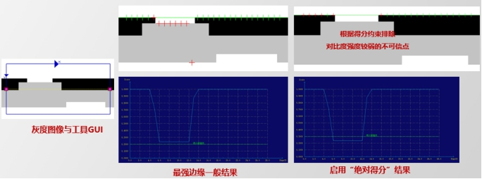

高级找线工具主要是在指定的ROI区域内对目标直线边缘进行拟合获得直线边缘，一般与定位工具配合使用。其实际应用效果如图1所示。
与找线工具原理相同，高级找线工具通过查找区域内卡尺参数的设置，寻找查找区域内的图像边缘点，然后对找到的边缘点进行直线拟合，从而寻找到一条目标直线，如下图所示。
高级找线工具的应用场景可以分为以下三个
测量项目中可作为特征元素或中间元素参与尺寸测量，如测量线段与线段之间的距离，直线与直线之间的角度，或者通过线线、线圆求交点后，计算两点间距离等。
配合几何定位工具，通过找线工具、找圆工具、交点工具、中点工具等工具查找物料某些固定特征作为参考特征来实现精确定位。
在标定对位类项目中，可通过高级找线工具、找圆工具、交点工具，求取特定Mark点的图像坐标，配合对应机械坐标值，计算图像坐标系与机械坐标系的转换关系。
高级找线工具与找线工具的区别：高级找线工具增加了考虑局外点、过滤细边缘、边缘得分约束和角度约束等功能，提高了查找的准确定和稳定性。
输入图像：待检测的图像
二维线性变换：该参数一般来源于定位工具，其表示为当前图像中的目标特征相对于模板图像中对应特征的平移、旋转、缩放变换。实时在线检测时，可通过该参数不断调整高级找线工具的查找区域。
重点参数说明如下，其余参数可参考“5.参数说明”。
单边缘和双边缘模式实际应用如图2和图3所示，采用单边缘模式时，其找线结果如图2(b)中的红色直线所示；若采用双边缘模式，卡尺摆放如图3(a)所示，卡尺的查找区域中包含两条边缘，找线结果为这两条边缘(图3(b)中绿色直线)的中线，如图3(b)中的红色直线所示。

卡尺的边缘极性是根据图像边缘的灰度级过渡形式来确定的。如图4所示，沿着卡尺Y轴正方向(红色箭头所指的方向)，图像边缘的灰度级过渡形式如果是从亮到暗，则边缘极性选择亮到暗，反之选择暗到亮，如果图像边缘的灰度级过渡形式不确定时选择任意极性。


如图5所示，其中红色十字点为局外点，局外点是不参与拟合的。其中局外点所占比例称为局外点比例，图5中局外点比例为0.2。一般在边缘干扰过大时，需要设置局外点比例。
一般对于多边缘图像，需要设置合适的边缘属性。
最佳边缘：在工具GUI中查找，边缘两侧的灰度对比度最强的边缘，强度需高于对比度阈值，边缘对比度越强，其边缘得分越高；
第一条边缘：在工具GUI中查找，沿小箭头方向即卡尺Y轴的正方向，最早出现且满足对比度阈值并且符合边缘极性的边缘，边缘位置越靠前，其边缘得分越高；
最后一条边缘：在工具GUI中查找，沿小箭头方向即卡尺Y轴的正方向，最后出现且满足对比度阈值并且符合边缘极性的边缘，边缘位置越靠后，其边缘得分越高；
离中心最近边缘：在工具GUI中查找，最靠近黄色虚线位置且满足对比度阈值并且符合边缘极性的边缘，边缘位置越靠近中心，其边缘得分越高；
期望灰度边缘：在工具GUI中查找，两侧灰度最接近期望值的边缘，暗侧、亮侧与期望值绝对值差异越小，其边缘得分越高；建议暗侧期望灰度、亮侧期望灰度设置为与实际暗侧灰度、亮侧灰度相差在10以内，例如暗侧实际灰度值为195，则可以设置暗侧期望灰度为190。
注意：选择双边缘模式时，边缘属性不支持“期望灰度边缘”。当查找范围为整个图像区域，边缘模式为单边缘，边缘极性设置为任意极性，选择不同的边缘属性时，其对应的找线结果如图6所示。
期望边缘暗侧的灰度值，建议暗侧期望灰度设置为与实际暗侧灰度相差在10以内，例如暗侧实际灰度值为195，则可以设置暗侧期望灰度为190、193、200。
期望边缘亮侧的灰度值，建议亮侧期望灰度设置为与实际亮侧灰度相差在10以内，例如亮侧实际灰度值为240，则可以设置亮侧期望灰度为230、246、250。
边缘得分阈值可以用来剔除不需要的探测点。
边缘得分阈值模式：分为“绝对得分”和“相对得分”。一般情况下使用“绝对得分”即可，只有在光照强弱整体有变化时才使用“相对得分”。
得分阈值：过滤低于得分阈值的探测点。
得分阈值GUI：如下图所示即为得分阈值GUI，其中横轴表示探测点编号，纵轴表示探测点得分，绿色直线为得分阈值，浅蓝色曲线为各个探测点得分连接起来得到的曲线。
图中得分阈值为0.3，因此得分低于0.3的探测点会被剔除掉。
如下图所示为边缘得分阈值的应用示例，绿色直线为得分阈值直线，默认为0.0。


过滤细边缘可以将期望边缘附近的一条暗色或者亮色的长条区域的边缘剔除，防止影响找线结果精确度或者剔除不需要的边缘干扰。
过滤边缘类型：是指干扰线条的类型，例如图中示例，干扰线条为暗类型，因此过滤边缘类型选择“暗类型”，如果过滤中间的那条亮色线条，则应该选择“亮类型”。
过滤边缘宽度：是一个过滤阈值，宽度小于该阈值的线条会被过滤掉，线条的边缘不会被查找。一般设置比实际要过滤的线条宽度大一些，例如过滤像素宽度是5的线条，可以设置为5.5、6、10等。

开启平行偏移参数选择“是”时，若平行偏移量参数输入为正时，直线结果向上(右)偏移得到平行偏移直线结果；反之，平行偏移量为负时，直线结果向下(左)偏移平行偏移直线结果。如图7所示，分别为平行偏移量参数输入为10和-10的输出结果图。


找线工具增加了对检测结果（包括直线质心、直线绝对角度、直线变化角度）的判定功能，用户可开启或关闭对应检测结果的判定功能。当检测结果超出设置的上下限阈值时，判定工具运行失败，用户可根据此时工具的运行结果进行后续处理操作。如图12所示。

| 现象描述 | 解决方法 |
|---|---|
| 找线ROI不能设置掩膜 | 查看属性栏参数“掩膜模式”是否选择“是”，选择“是”时才可以设置掩膜。 |
| 找线ROI不能设置卡尺参数 | 查看属性栏参数“手动模式”是否选择“是”，选择“是”时才可以设置卡尺参数。 |
| 找线失败 | 1. 查找失败。可根据输出窗口错误栏的错误提示，修改对比度阈值、局外点比例、复检模式等参数。 2. 判定失败。质心、直线绝对角度、直线变化角度判定上下限阈值设置不合理，可根据实际情况修改其上下限阈值 |
| 参数名称 | 参数描述 |
|---|---|
| 输入图像 | 输入图像宽度、高度、像素大小，同图像窗口的输入图像参数。 |
| 二维线性变换 | 目标相对于模板的平移、旋转、缩放变换。 |
| 参考平行/垂直角度直线 | 属性窗口开启参考直线参数，选择“是”时需要配置该参数。 |
| 参考平行位置直线 | 属性窗口开启参考直线参数，选择“是”时需要配置该参数。 |
| 查找区域 | 目标在图像中的查找范围，通过中心Center、尺寸Size和旋转Rotation对查找区域进行设置。 |
| 目标跟随 | 查找区域按照二维线性变换进行仿射变换。 |
| 边缘模式 | 卡尺工具的边缘模式有2种，单边缘和双边缘。 |
| 边缘极性 | 边缘极性是指图像边缘灰度级的过渡形式，分为3种，任意极性、亮到暗和暗到亮。 |
| 对比度阈值 | 卡尺工具默认只采用对比度评价分数，即按照边缘信号的强度来评分，输出边缘最强的点。对比度阈值的取值范围是0~255。 |
| 边缘属性 | 在查找区域内，卡尺根据不同的边缘属性，确定图像边缘的精确位置。 卡尺工具的边缘属性有5种，最佳边缘、第一条边缘、最后一条边缘、离中心最近边缘、期望灰度边缘。 |
| 暗侧期望灰度值 | 期望边缘暗侧的灰度值。边缘属性选择“期望灰度边缘”时才可用。 |
| 亮侧期望灰度值 | 期望边缘亮侧的灰度值。边缘属性选择“期望灰度边缘”时才可用。 |
| 局外点比例 | 局外点就是偏离曲线较远的点。局外点比例即不参与直线拟合的点的比例，取值范围是0~0.5。 |
| 是否自动更新局外点比例 | 自动调整局外点比例参数，使得拟合直线更符合期望结果。 |
| 是否启用角度限制 | 使用角度约束限制在设定的角度范围内找线。 |
| 期望角度 | 预期的直线角度 |
| 最大角度偏差 | 和预期直线角度的误差。实际找线角度范围为：[期望角度-最大容差，期望角度+最大容差]，例如期望角度位10°，最大角度容差为5°，则实际查找范围为[5°，15°]，10±5° |
| 是否启用边缘得分阈值 | 使用得分阈值过滤探测点。 |
| 边缘得分阈值模式 | 设置绝对得分阈值还是相对得分阈值，一般使用绝对得分阈值即可，在光照变换比较明显的情况下使用相对得分阈值。 |
| 得分阈值 | 过滤低于得分阈值的探测点，可以通过显示探测点查看效果。 |
| 是否显示得分阈值GUI | 在Result显示得分阈值GUI，方便根据曲线选择合适的得分阈值。 |
| 是否过滤细边缘 | 有些应用中，查找的产品实际边缘附近会有一条暗色或者亮色的长条区域影响找线，此时可以设置过滤细边缘，将干扰长条剔除。 |
| 过滤边缘类型 | 要过滤的是暗边缘还是亮边边缘 |
| 过滤边缘宽度 | 将小于该值的边缘过滤掉，设置时可以比实际边缘宽度大一些，例如多设置0.5,1,2之类的，这样可以防止找线工具和边缘不平行时过滤宽度不准确的问题。 |
| 掩膜模式 | 掩膜设置是指在模板训练过程中，屏蔽掉不参与模式训练的区域，减少参与模式训练的几何特征。 |
| 手动模式 | 选择“是”，支持手动设置卡尺参数，鼠标右键点击卡尺，在弹出的对话框中可以改变卡尺参数；选择“否”，不支持手动设置卡尺参数。 |
| 实时显示结果 | 选择“是”，在修改工具参数后，不需要运行工具，就可以实时显示结果；选择“否”，改变参数后需要运行工具才会显示对应的结果。 |
| 显示探测点 | 选择“是”，显示卡尺的探测点，同时输出探测点，每个卡尺对应一个探测点，可以作为其他工具的输入参数；选择“否”，不显示卡尺的探测点。其中局外点用红色标注，其余用绿色标注。 |
| 复检模式 | 如果找线失败，且开启了复检选项，则根据卡尺的模板变换后的结果输出直线。 |
| 开启平行偏移 | 选择“是”，根据平行偏移量参数对结果直线，进行平移操作。 |
| 开启参考直线 | 以指定参考直线为依据，对仿射矩形的搜索区域进行位置限制。选择“是”，显示修正类型参数、参考允许的角度偏差参数和参考直线距离参数。注意：当参考直线距离为0.000000的时候，相当于不开启参考直线。 |
| 修正类型 | 修正类型分为2种，平行和垂直。 |
| 参考允许的角度偏差 | 输入直线允许的角度偏差阈值，如果角度偏差超过阈值，以参考直线的角度修正。 |
| 参考直线距离 | 输入参考直线的距离。其中：左、上方为负值；右、下方为正值。 |
| 角度归一化 | 角度归一化是指对结果直线的角度进行转换，使之限定在一定的范围内。角度归一化有4种，[-90°, 90°)、[-180°, 180°)、[0°, 180°)和[0°, 360°)。 |
| 质心X上限 | 测量结果质心位置坐标X的判断上限阈值，取值范围[0,999999.999999]， 且下限应小于等于上限。 |
| 质心X下限 | 测量结果质心位置坐标X的判断下限阈值，取值范围[0,999999.999999]， 且下限应小于等于上限。 |
| 质心Y上限 | 测量结果质心位置坐标Y的判断上限阈值，取值范围[0,999999.999999]， 且下限应小于等于上限。 |
| 质心Y下限 | 测量结果质心位置坐标Y的判断下限阈值，取值范围[0,999999.999999]， 且下限应小于等于上限。 |
| 直线绝对角度上限 | 测量结果直线绝对角度的判断上限阈值，取值范围[-180.0, 360.0)， 且下限应小于等于上限。 |
| 直线绝对角度下限 | 测量结果直线绝对角度的判断下限阈值，取值范围[-180.0, 360.0)， 且下限应小于等于上限。 |
| 直线变化角度上限 | 测量结果直线变化角度的判断上限阈值，取值范围[-90.0, 90.0)， 且下限应小于等于上限。 |
| 直线变化角度下限 | 测量结果直线变化角度的判断下限阈值，取值范围[-90.0, 90.0)， 且下限应小于等于上限。 |
| 参数名称 | 参数描述 |
|---|---|
| 输入图像 | 输出图像宽度、高度、像素大小。 |
| 直线结果 | 直线的所经过点的位置坐标、方向向量和旋转角度。 |
| 线段结果 | 线段的起始点坐标和终止点坐标。 |
| 直线绝对角度 | 输出直线的角度。 |
| 直线变化角度 | 输出直线相对于基准变化的角度。 |
| 平行偏移直线结果 | 平行偏移直线的起始点坐标和方向向量。 |
| 平行偏移线段结果 | 平行偏移线段的起始点坐标和终止点坐标。 |
| 质心 | 线段的质心坐标。 |
| 执行结果 | 工具执行结果。 |
| 执行时间 | 工具执行时间。 |
参见“\Samples\高级找线工具.gvp”。